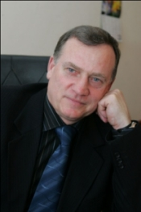

[Previous page...]
THE HEAD OF THE EDUCATIONAL-SCIENTIFIC CENTRE OF EXCELLENCE IN THE FIELD OF TELECOMMUNICATIONS
AND
INFORMATION SYSTEMS OF THE INSTITUTE OF TELECOMMUNICATION SYSTEMS AT THE NATIONAL TECHNICAL
UNIVERSITY OF UKRAINE “KYIV POLYTECHNIC INSTITUTE”
DOCTOR OF TECHNICAL SCIENCES, PROFESSOR,
ROMANOV ALEXANDER IVANOVICH

Romanov A. I. is a Professor of the Department of telecommunications at the Institute of
telecommunication systems NTUU "KPI" and the head of the educational-scientific centre of
excellence in telecommunications and information systems (TIS center).
TIS Centre is the successor of the educational-scientific centre of post-graduate
telecommunications education, which was established at the Department of telecommunication
systems in NTUU "KPI", as a structural subdivision of Educational-methodical complex "Institute of postgraduate
education"»in 2011.
During its existence the possibilities and directions of work of the Center has significantly
changed and grown. In the early years of training we provided the opportunity to gain profound
theoretical knowledge in the field of telecommunications, but today we focus on the practical
skills of the telecommunications equipment setup.
A lot of work has been carried out by the Institute of telecommunication systems, representatives
of our partner companies, students and experts in the area of operation of data transmission
networks, with purpose to have the opportunity to work on real hardware in our
laboratories.
Among telecommunications companies, we would like to distinguish LLC "Astelit" and IBM Ukraine.
LLC "Astelit" has given 14 Cisco routers, and IBM Ukraine - 15 laptops. After the repair,
servicing and adjusting this equipment in the Institute, the possibility of organizing 12
working places for training has appeared.
Among specialists, we would like to acknowledge the contribution to the development of the
laboratory facilities of the center, which was made by Kompaniec Anton. He can rightly be
considered as the founder of the first laboratory. He gave the first 6 routers, moving them from
a real data network. Kompaniec Anton helped to create working models of the underlying transport
network, and to deploy the VoIP technology, and other services.
The development of TIS Centre laboratories is ongoing. For this we need equipment. If anyone has
the opportunity to help – we will be very grateful. I would like to note that the equipment may
be the new, outdated and even faulty. We try to repair the failed hardware. And if it is beyond
repair - we study and give students an opportunity to see the individual elements. In addition,
often in the equipment given to us there are no power cords, interfaces, connecting cables. So
we will happily take everything, including twisted pair, connectors, etc.
|